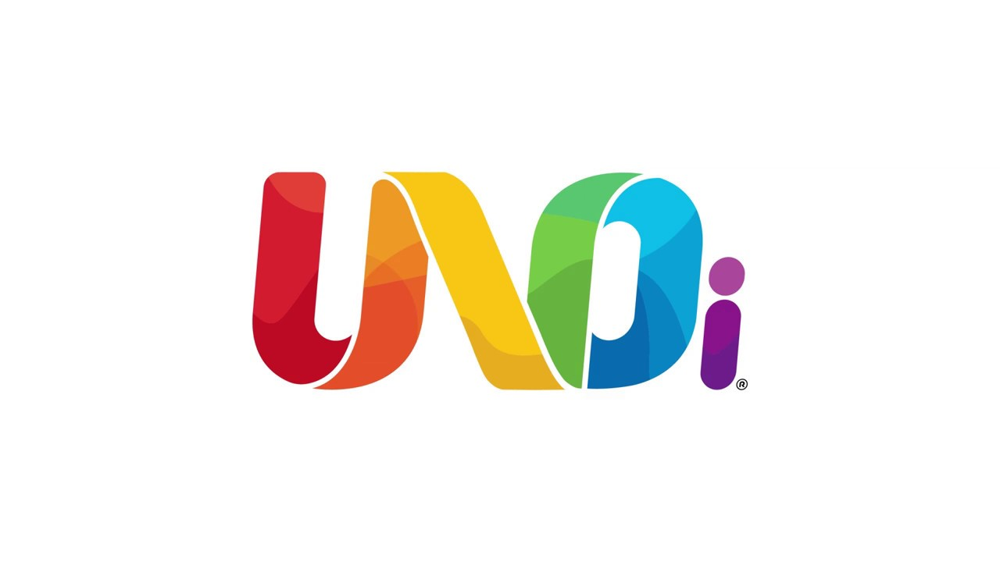
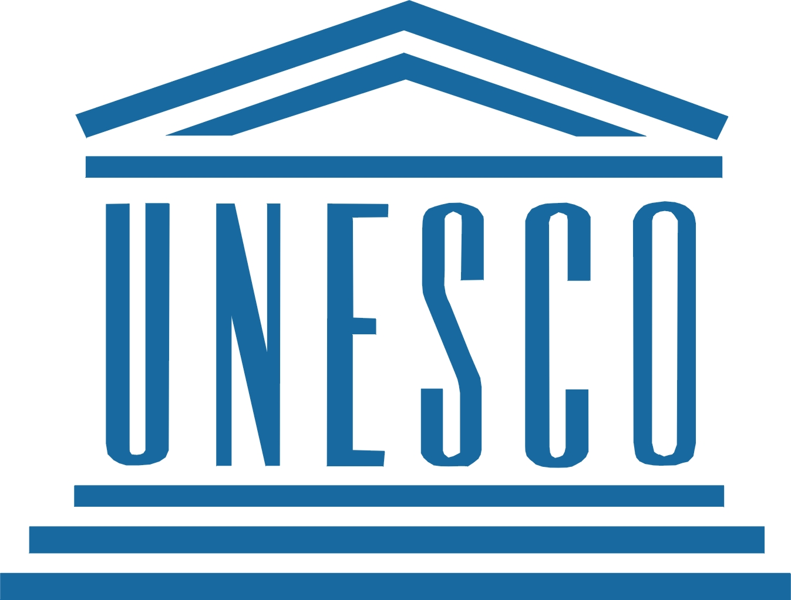
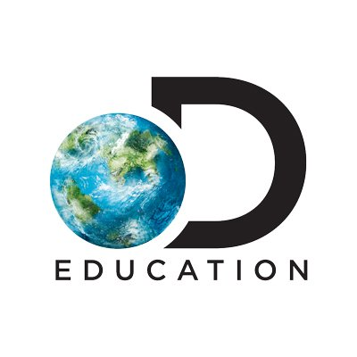
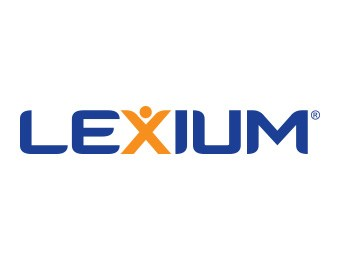
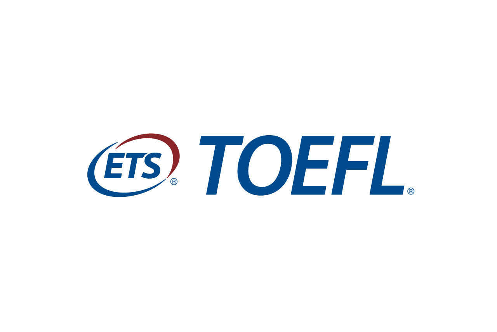
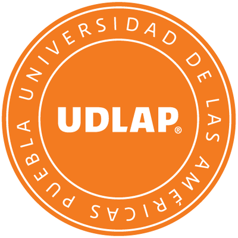

Es un proyecto de transformación educativa basado en un sistema integral de educación por competencias con
una pedagogía innovadora que se vale de los recursos y las ideas mas avanzados disponibles hoy en día.
Involucra a la escuela (directores, maestros, alumnos, padres de familia y expertos en educación) en una
conversación inteligente y profunda acerca de su propia función dentro de la sociedad. Tendientes a
transformar la escuela y la forma como educamos a las nuevas generaciones.
UNOi provee a la escuela con una serie de recursos teóricos, técnicos y tecnológicos avanzados para
desarrollar las capacidades intelectuales de los alumnos, formarlos en el manejo de sus afectos y
prepararlos para ser ciudadanos del mundo cambiante del siglo XXI. Es la propuesta más completa e innovadora
con que cuentan las escuelas para que los niños y jóvenes puedan enfrentar, tanto los retos de hoy como los
que se les presentarán durante toda su vida. Los alumnos UNOi están listos para el mundo que les espera.
UNOi se compone de dos programas:
PROGRAMA SE (SISTEMA DE ENSEÑANZA POR COMPETENCIAS)
Enfocado en cubrir los contenidos curriculares, desarrollar competencias y valores, potenciar el
pensamiento matemático y sembrar la conciencia de sustentabilidad en nuestros alumnos.
PROGRAMA BE ( ENGLISH PROGRAM)
Garantiza el uso del Ingles como lengua franca dentro de la escuela, para que tus hijos crezcan y se
desenvuelvan naturalmente en un entorno bilingüe.
Nuestras alianzas
UNESCO
El organismo de Naciones Unidas dedicado a velar por el avance de la educación en el mundo es nuestro
aliado.
Sostenemos una conversación enriquecedora que nos permite establecer ciertos estándares de desempeño y
tener una alineación a nivel proyectual que nos garantiza estar a la vanguardia en las tendencias
educativas a nivel mundial.

Apple
La empresa de tecnología por excelencia es también la empresa de dicho sector que más injerencia ha
tenido en el entorno educativo. Gracias a esta valiosa alianza, proveemos a la escuela con los
dispositivos tecnológicos necesarios para crear una cultura digital que libere el conocimiento en el
aula como nunca antes había sido posible.
Discovery Education
El proveedor líder de contenido educativo en video es nuestro aliado y ofrece a nuestros alumnos miles
de videos sobre temas apasionantes que les permiten adquirir conocimiento de forma visual y auditiva.

Animal Planet
Empresa hermana de Discovery Education, Animal Planet explora el reino animal por medio de contenido
audiovisual de alta calidad y permite a nuestros alumnos entrar en contacto de forma mucho más vivencial
con uno de los aspectos más emocionantes de la vida en nuestro planeta.
Lexium
Empresa mexicana líder en desarrollo de las facultades del aprendizaje, Lexium nos ha permitido
desarrollar el Modelo de Aprendizaje por Competencias, así como realizar evaluaciones específicamente
enfocadas a conocer el perfil y el potencial de aprendizaje de cada uno de nuestros alumnos.

Avalia
Empresa brasileña líder en evaluación educativa, Avalia nos permite medir el desempeño de nuestros
alumnos en áreas tan importantes como son las habilidades lectoras y matemáticas, así como el desempeño
de la escuela como institución educativa en general.
Cambridge English Language Assessment
Pocas instituciones educativas en el mundo gozan del prestigio que tiene la Universidad de Cambridge,
Inglaterra. Cambridge English Language Assessment es la empresa internacional que se rige bajo los
estándares de calidad de dicha institución para llevar a cabo evaluaciones de lengua inglesa en todas
las aulas de Sistema UNO Internacional.
ETS
La empresa que es sinónimo de la reconocida certificación TOEFL a nivel mundial es nuestra aliada y ofrece a nuestros alumnos la posibilidad de obtener dicha certificación a través del estudio de cualquiera de nuestros programas de inglés.

UDLAP
Una de las universidades de mayor prestigio en Latinoamérica, la Universidad de las Américas Puebla es una aliada invaluable en el proceso de formación y nos permite impartir conocimientos especializados tanto a docentes como a directivos escolares que forman parte de la gran Red UNOi.

DIES
Las habilidades matemáticas son de suma importancia para enfrentar muchos de los desafíos de la vida actual y DIES es una empresa mexicana especializada en fomentar tales habilidades con altos niveles de eficiencia. DIES y UNOi han creado el programa RAM, que permite a los alumnos tener una Renovada Actitud hacia las Matemáticas.